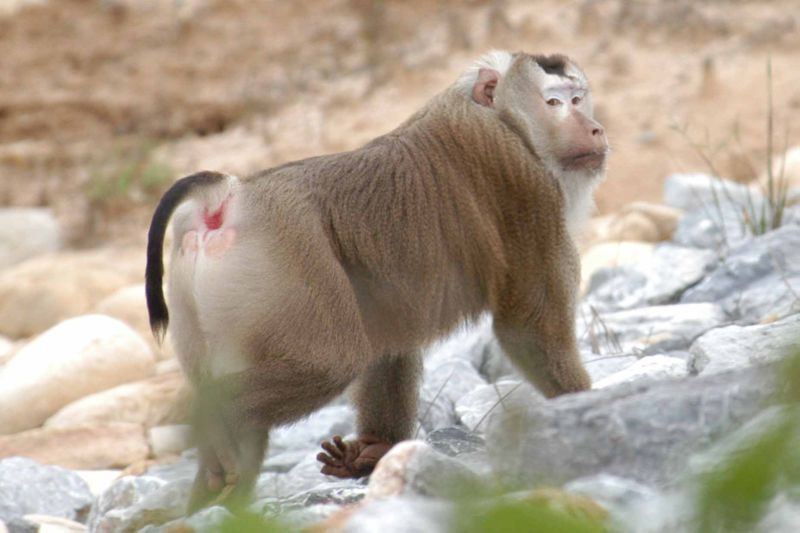
体长54-62厘米，体型较粗壮，头顶平坦，具辐射排列的黑褐色顶毛。脸周毛斜向后方，耳周毛则向前方，彼此相连似一围带。通体毛色淡黄褐，唯背中线色较深暗，略呈一脊纹。尾较细长，常上翘呈“S”型。
栖息广泛，草原、沼泽各类森林。主要栖息在石山峭壁、溪旁沟谷和江河岸边的密林中或疏林岩山上，群居。
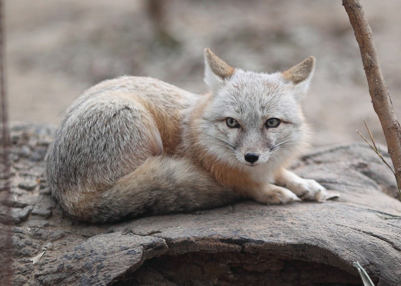
体长50-60厘米，尾长25-35厘米，体重约2-3千克。比赤狐略小。
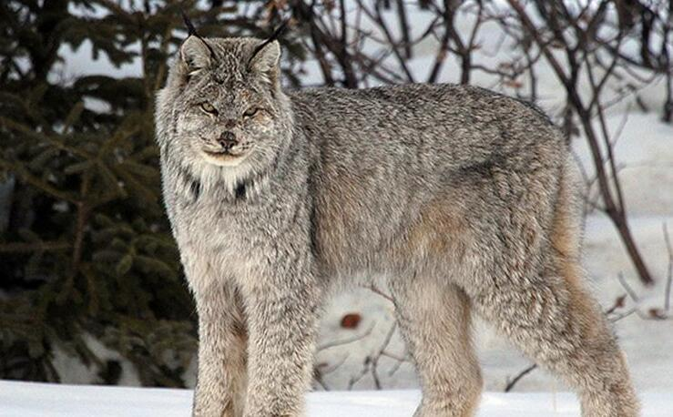
A猞猁，猫科猞猁属猛兽，也叫猞猁狲或山猫。 猞猁身体粗壮，四肢较长，尾短粗，尾尖呈钝圆；耳基宽；耳尖具黑色聋立簇毛，两颊有下垂的长毛；
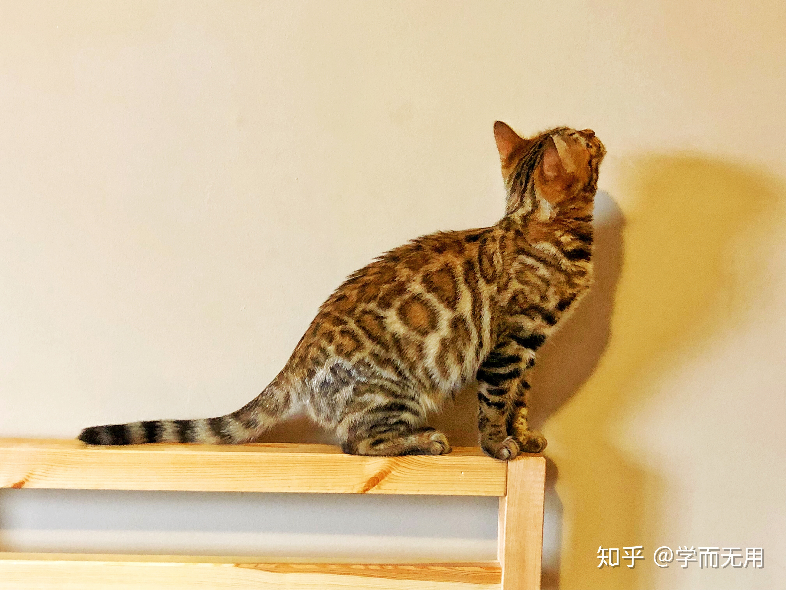
是猫科、豹猫属动物。头体长360-660毫米，体重1.5-5千克。豹猫在中国也被称作“钱猫”，因为其身上的斑点很像中国的铜钱。o
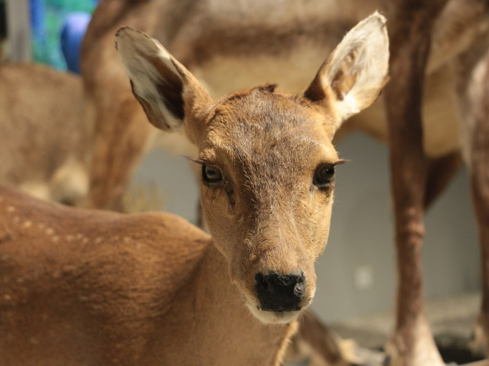
豚鹿（学名：Axis porcinus）也叫芦蒿鹿，体形中等，但较为粗壮，四肢较短，显得矮胖，臀部钝圆且较低，姿态象猪，因而得名。雄性豚鹿长着细长的三叉角，全身淡褐色，生活在沿河两岸的湿地。
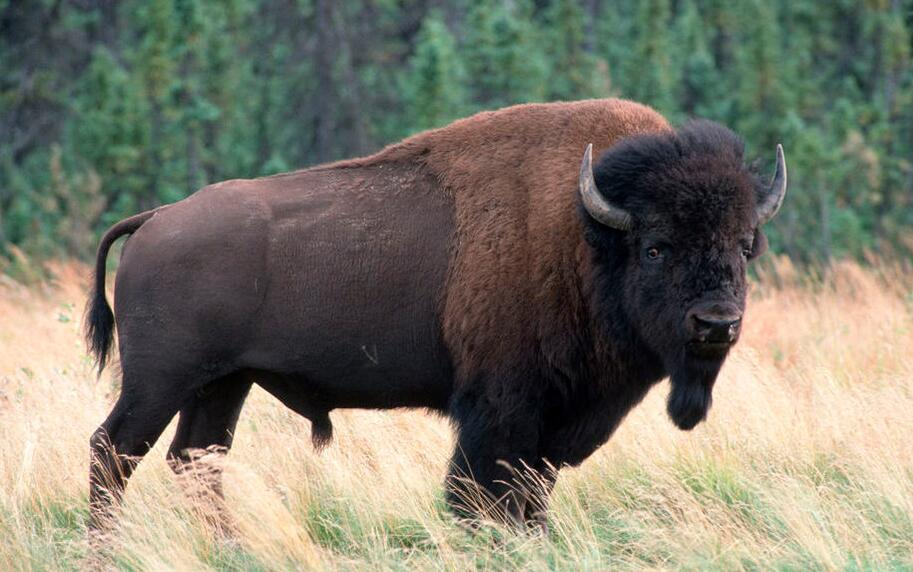
Aenean fermentum nisl ac imperdiet commodo
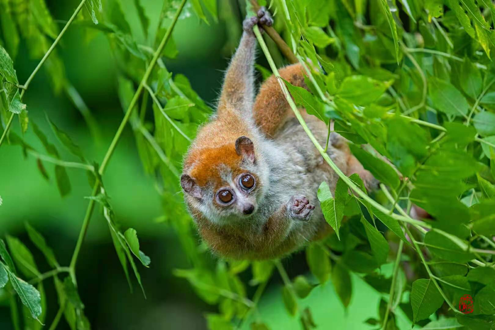
别称小蜂猴、小懒猴、风猴、小风猴，属于懒猴科、蜂猴属，是中国体型最小的一种原猴类，成体体长195~230mm，体长在性别上无差异
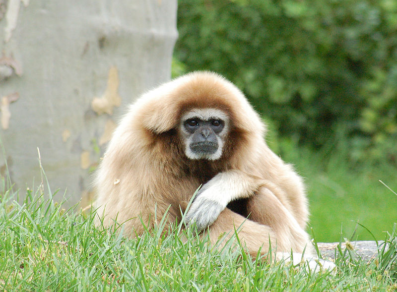
是灵长目、长臂猿科动物。体长为50-76厘米，体重4.2-6.8千克。手、足白色或淡白色，故称白掌长臂猿。背毛长11-15厘米。
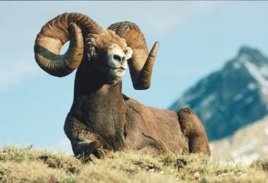
是牛科、盘羊属动物。雄性肩高可达120厘米，体重可达200千克。雄性的弯角粗大，长达1米以上，向下扭曲呈螺旋状，外侧有环棱；雌性的角非常短，而且弯度不大
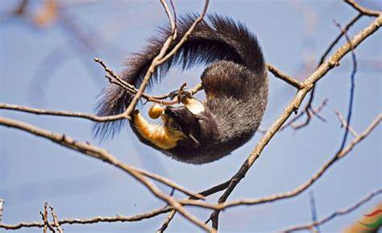
也称为树狗、黑狸、藤狸、黑果狸、黑大松鼠或马来亚大松鼠，为一种大型啮齿类动物。栖息于海拔2000米以下的热带、亚热带季雨林的高树上，是典型的树栖动物。
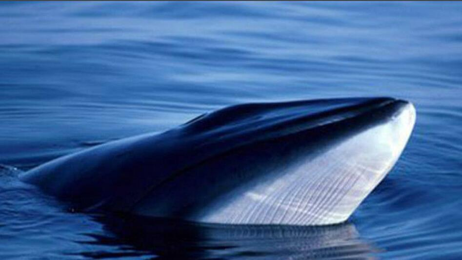
是须鲸科、须鲸属小型须鲸的一种。头极窄而尖，仅一条嵴。体呈细长而尖，上面观头部成一锐角等腰三角形。具背鳍小，镰刀形，位于体后约1/3处。鳍肢细，末端尖尾鳍颇宽，